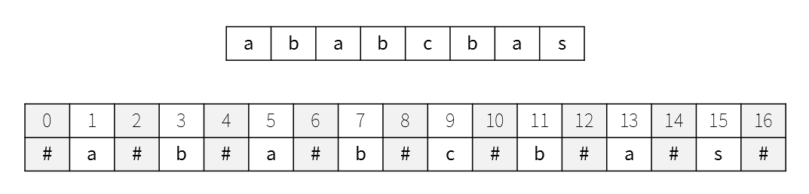
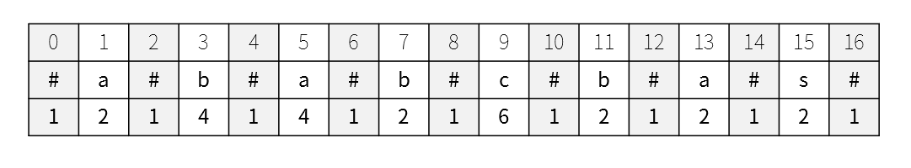
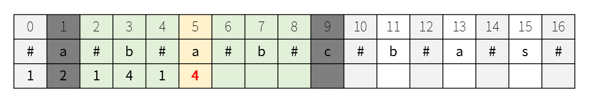
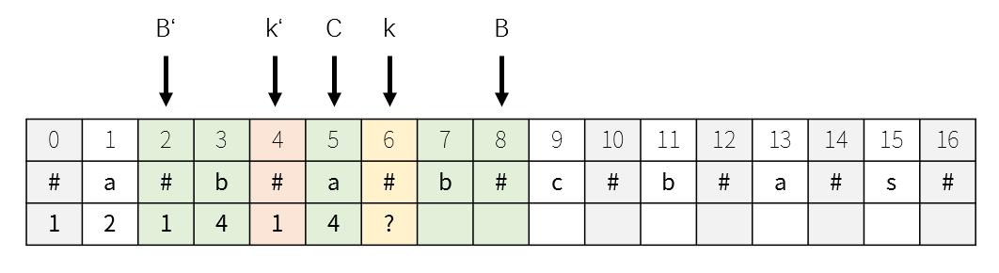
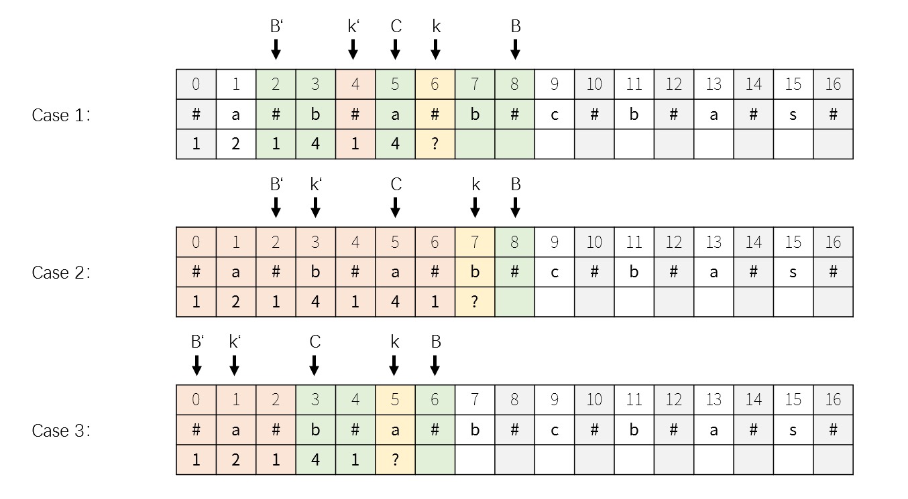

本篇为算法学习过程的笔记，但和数值方法的那种算法略有不同。倒不如说是在重新学习一下数据结构（？）
本篇的内容都来自与leetcode刷题学习到的各种算法等等。总之学到什么就写在这里了。虽然不确定这些知识对以后从事的领域会不会有很大的帮助，多学一点也是好事。（大概
Version
- ver0.1 2019/9/25 创建文档
- ver0.2 2019/9/26 Manacher算法编写
动态规划 Dynamic Programming
Manacher 算法
解决的问题：最长回文子串 -> Leetcode:Q5 最长回文子串
算法复杂度：$O(n)$
空间复杂度：$O(n)$
这个算法放在动态规划的第一个，总觉得有一点不太合适。不过本来这个BLOG只是为了记录各种比较著名的算法，所以也就不关心难度了。
在确定子问题之前，先对数据进行处理。由于奇数个字符的回文串和偶数个字符的回文串的处理方式不太一致，因此在每两个字符中间以及字符串的开头和结尾插入#，从而将所有回文串调整成奇数个字符的回文串。（偶数个字符的回文串将以#为回文串中心）

当然，也不一定要是#，只要不会影响原字符串的任意符号就可以。
下一步就可以正式进行动态规划了。我们构造这样一个问题：
已知所有$i, i < k$为中心的最长回文串的半径（长度+1的一半），求以$k$为中心的最长回文串的半径。

所以正确的结果应该就像上面的那个表格一样。
那么上面的问题应该如何解决？既然时间复杂度以$O(n)$为目标，那么如何充分利用之前字符串的数据会变得非常重要。
首先我们确定通常的做法，计算以$i$为中心的最长回文半径，只需要不断比较$i+1$与$i-1$，$i+2$与$i-2$的字符是否相同即可。

下面就考虑如何充分利用之前的数据。先设定一个位置叫作扫描边界$B$。在这条边界左侧的字符我们都已经扫描过。如果我们当前字符位置$k$在边界右侧，显然我们无法根据前面的信息，计算该位置的最长回文半径，因此我们使用普通的方式，进行扩展。同时更新扫描边界$B = k + r_k - 1$
那如果当前字符的位置在边界的左侧，说明我们已经了解了一部分该位置的信息。因此通过考虑回文对称性来利用该信息。如前文所述，扫描边界同样也是一段回文串的边界。我们把这串回文串的中心记为$C$。这样我们就可以找到与当前位置$k$对称的位置，我们记为$k’$。当然我们也要把$B$对称过去以确定左边界$B’$。这样，我们就可以根据$k’$为中心的回文串情况去分析当前位置$k$的回文串情况。

如果以$k’$为中心的最长回文串在以$C$为中心的最长回文串之内，显然我们可以断定$k$的最长回文串长度与$k’$的最长回文串长度保持一致。即$r[k] = r[k’]$。
如果以$k’$为中心的最长回文串超出了以$C$为中心的最长回文串的范围，由于$B$右侧部分一定无法与$B’$的左侧部分对称（根据最长回文串的性质），因此对称过去的$k’$要被砍掉超出$[B’, B]$范围的数据，剩下的部分为$k$的最长回文串。
如果以$k’$为中心的最长回文串的左边界与以$C$为中心的最长回文串的左边界重合，由于$B’$左侧的部分没有成功形成以$k’$为中心的回文串，则为$B$右侧的字符提供了机会（因为$B’$左侧与$B$右侧一定不对称），因此需要进行扩展搜索最长回文串。同时更新扫描边界$B$以及与扫描边界相关的对称中心$C$。

总结以上的情况，并考虑一些边界情况，即可以写出Manacher算法的编码。显然这是一个时间复杂度为$O(n)$的算法。
1 | class Solution: |